Developers hosting applications in the cloud not only have to worry about ensuring their applications aren't vulnerable, but also about the security of the cloud environment that they may be deployed in. Unfortunately, cloud providers have security models that are substantially different and more complex than traditional enterprise security models. As a result, misconfiguration errors in cloud deployments have led to dozens of well-publicized breaches.
For this lab, you will be completing all of the levels in Thunder CTF (https://thunder-ctf.cloud), a scaffolded, scenario-based CTF for helping students learn about and practice cloud security skills. Thunder CTF can be easily deployed at minimal cost on your Google Cloud Platform project. Upon completion of each level, you will also practice the defender role in the cloud by performing incident response on the project's exploitation. In order to support this activity, we have enabled detailed audit logging on all of the relevant cloud services that Thunder CTF deploys.
What you'll learn
- How vulnerable cloud projects may be exploited
- How to use log analysis to identify and track malicious activity in cloud projects
What you'll need
- An account on Google Cloud Platform
Create a new GCP project and then follow the instructions to bring up Thunder CTF on it here. Ensure you enable all APIs and logging for the CTF when activating the project.
After activating the project, visit the Audit Logs configuration page from the web console under "IAM & Admin".

Ensure that detailed logging has been activated for all of the services requested during project activation as shown below.
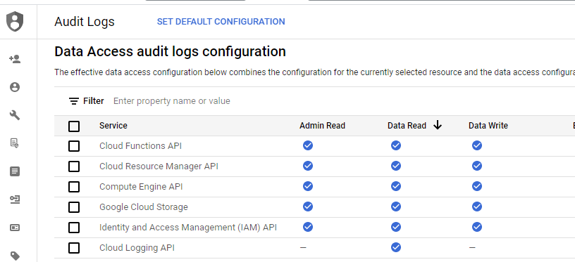
Without detailed auditing enabled, the log entries required to perform forensic analysis in this codelab will not appear. If the data access audit log permissions are not set, you can click on "Set Default Configuration" and enable them project-wide.
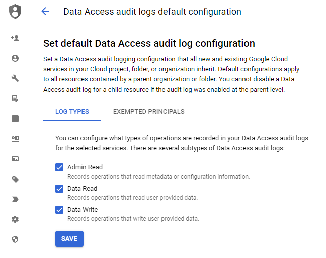
Compromise level
Open up your Thunder CTF Google Cloud project and launch the level. After the level has been deployed, make a note of the start time and complete the level.
- Take a screenshot of the secret obtained
Then, make a note of the time you completed it, and leave the level up running.
Examine logs via Cloud Shell
The forensic analysis for all of the levels involves accessing the audit log files that keep track of previous activity. The logging for a cloud project is typically integrated into a provider's infrastructure, in this case, via Google Cloud's Logging service. To list the logs on the project, enter the following command. Note that the command requires logs.logInstances.list permissions. (A full list of permissions can be found in the scripts/test-permissions.py file)
gcloud logging logs listA couple of logs will be listed. Read the data access log using the following command, filling in the log name.
gcloud logging read <FMI>The command will list all of the audit entries for data access on buckets. Each entry contains the email of the Google Cloud account that performed the action, the origin of the request, the time of the request exploit, and other information.
insertId: 4gdc3ye7m4aq
logName: projects/[project-id]/logs/cloudaudit.googleapis.com%2Fdata_access
protoPayload:
'@type': type.googleapis.com/google.cloud.audit.AuditLog
authenticationInfo:
principalEmail: [cloud-email]
...
methodName: storage.objects.get
requestMetadata:
callerIp: 104.198.106.49
callerSuppliedUserAgent: apitools Python/3.7.3 gsutil/4.51 (linux) analytics/disabled google-cloud-sdk/
299.0.0
...
serviceName: storage.googleapis.com
status: {}
receiveTimestamp: '2020-07-07T21:10:13.820386984Z'
...This particular method for accessing logs is not particularly helpful when considering the large volume of logging information that can be produced. To perform forensic analysis without having to parse the raw log entries, we will examine more user-friendly methods.
Examine logs via project activity
An alternate, more condensed, way of viewing the entries is to look at a project's activity from within the Google Cloud Platform UI. While the information shown isn't very detailed, the summary is useful when one wishes to quickly look up times that particular events have happened so that you can then query more detailed logging information.
To view the project's activity visit the web console and ensure that the project you are running the CTF on is selected. Then, as shown below, navigate to view the project's latest "Activity".
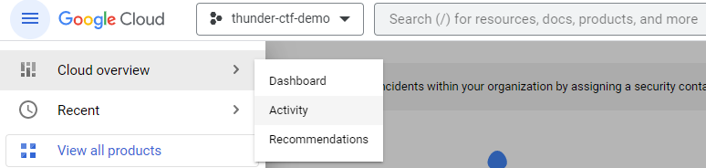
This action should open up the project's activity log, which should list major events in the cloud project including the exfiltration event and the perpetrator of it (i.e. you). Note that on the right-hand side of the screen, under Categories, you can narrow what is shown by clicking on the Activity Types bar. Click on it and select only the "Data Access" events.
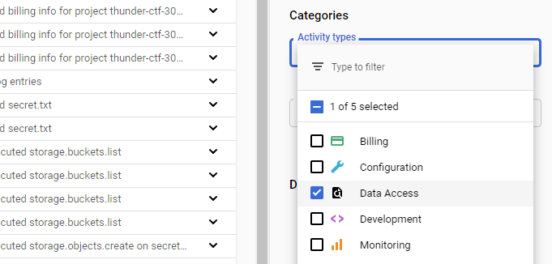
By default, only the latest log entries are shown in the Activity interface. As navigating the logs generates additional log entries, it is helpful to narrow the range of logs you're looking at to only the time ranges that you played the level during. Below the different categories, you can select a date range to narrow the time range of the log entries being viewed.
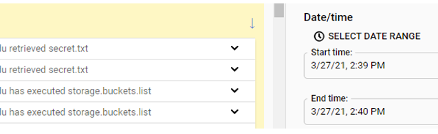
Using the times you recorded in solving the level, select a date range that will result in showing only the events that were logged as a result of your activity playing the level.
- Take a screenshot of these entries for your lab notebook.
Examine logs via Logs Explorer
For more detailed logging information, GCP has an integrated logging service built-in that is used to store and query audit logs. To access the same log information as before, but within this logging service, click on the hamburger icon and locate "Logging". Click on "Logs Explorer".
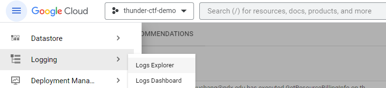
The explorer allows you to create filters for querying the log entries that are being collected across all of the project's cloud services. By default, Logs Explorer only gives you the last hour of activity, but as with the Activity interface, you can enter a custom range of dates by clicking on the clock icon shown below:
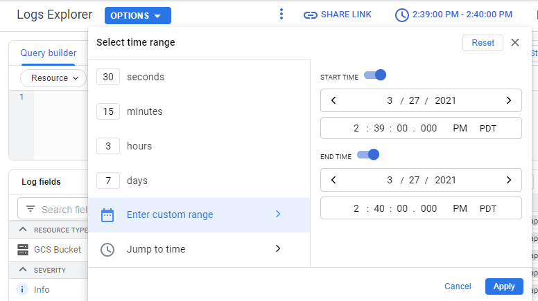
Logs Explorer allows you to filter what is shown based on a variety of "Log fields". If you do not see these fields in your interface, click on "Page Layout" and add it.
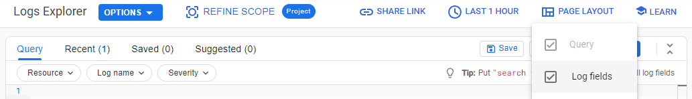
Clicking on any of the fields will update the query Logs Explorer will use to retrieve the log entries. Click on the "GCS Bucket" resource type and let the UI refresh. See that it has updated the query based on the selected resource type.
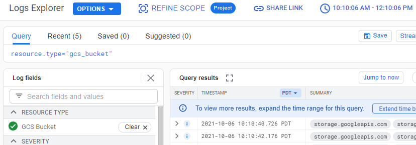
We are interested in finding the log entry associated with the exfiltration of the secret file from a particular storage bucket. To zero in on this, within the Log fields, select the data access log and the storage bucket containing the secret.

Expand out the fields of this request to show it is the one associated with the data exfiltration.
- Take a screenshot of this entry for your lab notebook.
Clean-up level
Bring down the level.
python thunder.py destroyExamine Deployment logs via Logs Explorer
The creation and deletion of each Thunder CTF level is logged. To see these events, after the level is destroyed, go back to the Logs Explorer and select the resource type associated with Deployment Manager events. View both the creation and deletion calls into the project by expanding out each entry and its nested fields.
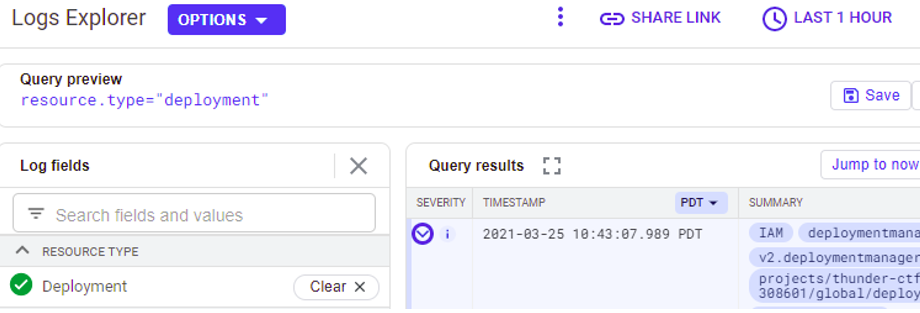
Answer the following questions after expanding out the log entries:
- What is the
methodNameof the creation command and theprincipalEmailaddress of the account that issued it? - What is the
methodNameof the deletion command?
Compromise level
Open up your Thunder CTF Google Cloud project and launch the level. Then, make a note of the start time and complete the level.
- Take a screenshot of the secret obtained
Then, make a note of the time you completed it, and leave the level up running.
Examine activity
The process of accessing logs on the second Thunder level is similar to the first level. Within Google Cloud's web console view its "Activity" logs. Filter based on the level start and completion times. Then, find the timestamps of particular operations you have performed as part of the playing the level. This particular level involves exfiltration of credit card transactions using the Logging service. Since we are using the Logging service to examine Logging entries, we'll be generating many Logging events. As a result, limiting the entries based on a particular date range can help us focus on only the events we wish to see.
Examine Logging logs
Visit the Logs Explorer and set the range of times as before to examine the log entries associated with playing the level. To examine the accesses that have happened on the logging service, within Logs Explorer, add a query filter on the "Resource Type" of "Log stream". Find the log entries that are associated with the commands you used to perform the exfiltration of the transactions log, the pivotal breach that completes the level.
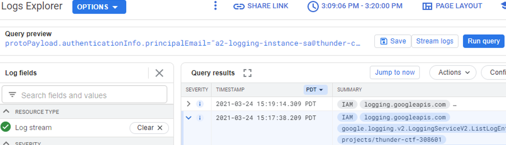
Expand out one of the entries and examine its payload
- What is the name of the service account that was used to perform the exfiltration? The answer does not have @pdx.edu in it.
- Include a screenshot of the query filter that was used during the exfiltration that shows what parts of the
transactionslog has been exfiltrated (similar to below)
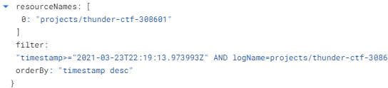
Examine Compute Engine logs
Another important event in the level, is the discovery of the VM that is used to access the logs. Via the Logs Explorer, filter on the "VM Instance" resource type to list log entries associated with Compute Engine virtual machines. Find the log entry that results from the command used to get the instance information of the machine whose clouduser you found the ssh key for.
Expand out the entry and examine its payload
- What is the name of the service account that was used to perform the command? Explain the difference between this service account and the one from the previous step.
- What is the service account key name used to perform this operation? (We would want to delete this key if this were an actual compromise.)
Examine Cloud Storage logs
Within the "Log Explorer", find the initial request that listed the storage bucket. Expand the nested fields to find the requestMetadata for the request. This is the entrypoint of the attack.
- Show the IP address and UserAgent for this request.
Examine instance
Note that when deploying VMs in the cloud, there are additional sets of logs located on the VM itself. The act of ssh-ing directly into the Compute Engine instance is a particularly important event in this level. Unless configured explicitly, the logs for the Linux VM are not streamed into the audit logging service. To examine these logs, access the server directly by ssh . Use the last command upon logging into the instance to view the previous logins and where they originated.
- Show the output of the command when run on the VM
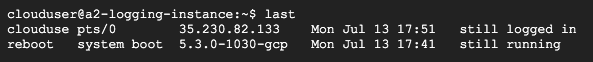
Clean-up level
Bring down the level and continue to the next one.
python thunder.py destroyCompromise level
Open up your Thunder CTF Google Cloud project and launch the level. Then, make a note of the start time and complete the level.
- Take a screenshot of the secret obtained
Then, make a note of the time you completed it, and leave the level up running.
Examine activity
As before, view the project's "Activity" logs. Filter based on the level start and completion times. Then, find the timestamps of particular operations you have performed as part of the playing the level. Limiting the entries based on a particular date range helps us focus on only the events we wish to see.
Examine Cloud Storage logs for secret access
Similar to the first level, this level finishes when a secret stored in a storage bucket is exfiltrated. In Logs Explorer, find the entry that exfiltrates the secret.txt file from the storage bucket it is stored in by selecting the GCS Bucket resource type, the data access log file, and the bucket. Expand the log entry to show the resource name of the file, the service account used to access it, and the User Agent that the cloud function uses to obtain the contents of it.
- Take a screenshot of this entry for your lab notebook.
Examine Cloud Functions logs for secret access
The access to the secret has been performed by the Cloud Function. Examine the log entries for Cloud Functions in Logs Explorer and expand out the log entry associated with the access to secret.txt. Among other information, the entry provides the status code and an execution time for the invocation.
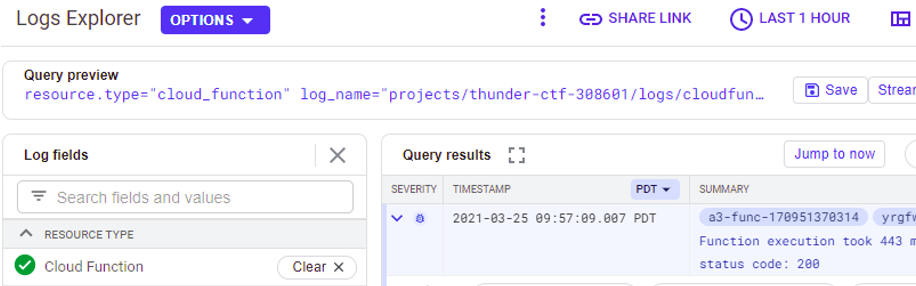
- Take a screenshot of this entry for your lab notebook.
Examine Cloud Storage logs for source code download
The level is solved by reverse engineering the Cloud Function's source code. To obtain the source code of the function, we used elevated privileges to dynamically generate a zip file that we then downloaded from a storage bucket associated with Cloud Functions (e.g. prefixed with gcf-sources-). In Logs Explorer, filter on "Cloud Storage" and the storage bucket that is used to store the source code of the function. Find the entry that was used to download the zip file containing the source code of the function.
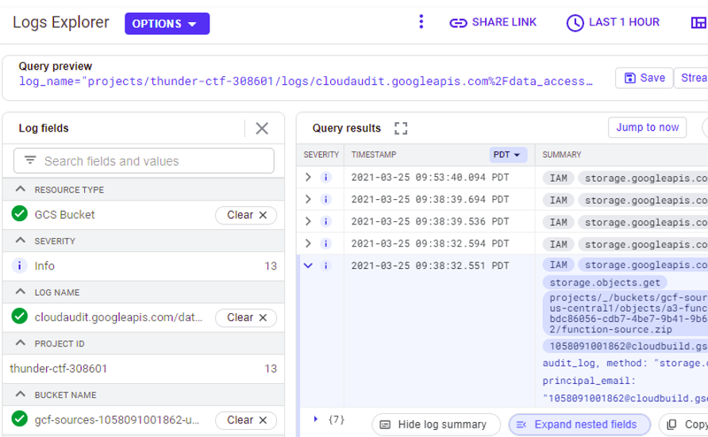
- Take a screenshot of this entry for your lab notebook.
Examine Cloud Functions logs for generating source code download
The zip file is generated via our elevated privileges on the Cloud Function. Within the Cloud Functions logs, find the entry that generates this zip file and its URL. Expand the entry fields out.

Examine the entry.
- What is the service account that performs the operation, the service account key name, the authorization permission included and the methodName used in this operation?
As a remediation, the service account key should be revoked and the permission given to the service account should be removed in order to secure the Cloud Function.
Compromise level
Open up your Thunder CTF Google Cloud project and launch the level. Then, make a note of the start time and complete the level.
- Take a screenshot of the secret obtained
Then, make a note of the time you completed it, and leave the level up running.
The fourth Thunder CTF level involves reading files, manipulating VM metadata, and logging into compute instances. Many of the strategies listed in previous defender path levels are also applicable to this level, but instead we will examine other aspects of the Logs Explorer.
Examine logs by severity
Begin by setting the date range of the Logs Explorer to encompass the time period that you worked through the level. Logs can become voluminous based on project activity. As a result, It is difficult to process a large number of them manually. Log data is labeled by severity type, however, which allows one to zero in on important events. Severity types include informational, debug, error and notice types.
Visit Logs Explorer and filter your entries based on the "Notice" type. Examine the log entries with this type. This type is typically severe and might warrant some attention. Many security-related events will be at this level.
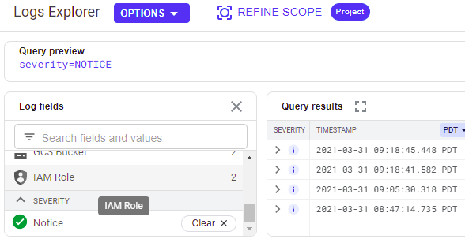
- Take a screenshot showing the events at this severity
Then, filter your entries based on the "Error" type. Examine the log entries with this type. This type is associated with events that cause a crash. For example, if the execution of a Cloud Function results in an error, the stack traceback would be logged for the developer to examine afterwards.
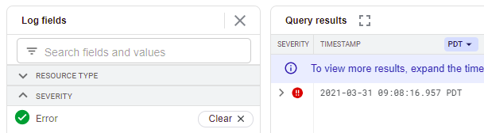
- Take a screenshot showing the events at this severity
Find setMetadata log event
Use the prior methods to find the log entry for the event that inserts the ssh key onto the instance.
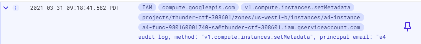
Expand out the entry to perform forensic analysis.
- Take a screenshot showing the name of the service account that has been used to perform this operation as well as the IP address of the client and the User-Agent of the request that has performed the operation.
Find token exposure log event
Use the prior methods to find the log entry for the error that exposes the access token of the Cloud Function that is being executed. The entry contains the same content as shown when playing the level.
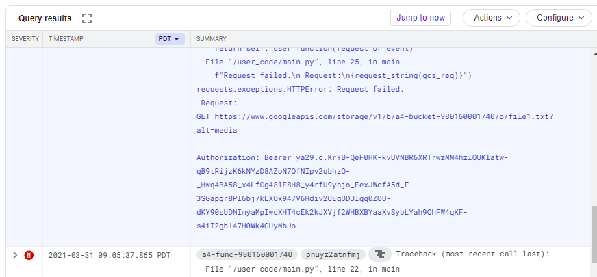
- Take a screenshot showing the stack trace returned on the request that exposes the access token along with the request that led to the error.
Compromise level
Open up your Thunder CTF Google Cloud project and launch the level. Then, make a note of the start time and complete the level.
- Take a screenshot of the secret obtained
Then, make a note of the time you completed it, and leave the level up running.
Level 5 focuses on modifying functions and user roles. Again, many of the steps can be revealed using techniques in previous levels.
Examine activity
As before, view the project's "Activity" logs. Unlike prior levels, we have done some configuration changes on an IAM role in the project. Within the "Activity types", select both data access and configuration options. Then, filter based on the level start and completion times.
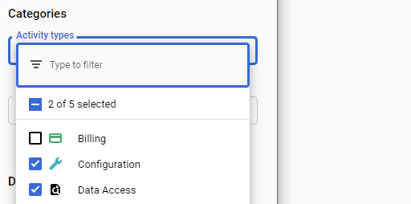
Go through the logs to find the timestamps for the following events.
secret.txtaccess from the storage bucket- IAM level access role being patched
- Cloud Function code updated
Then, find the timestamps of particular operations you have performed as part of the playing the level. Limiting the entries based on a particular date range helps us focus on only the events we wish to see.
Find exfiltration event
Go to "Logs Explorer" and use the filters within the interface and the timestamps from the previous step to find the event that exfiltrates the secret from the storage bucket.Expand out the entry and examine its fields.
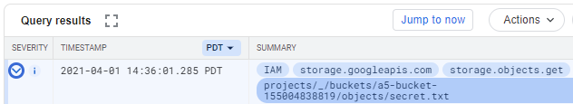
- Take a screenshot of the entry that includes the service account used to access the bucket.
- Would this access have worked at the beginning of the level?
Filter by service account
Another approach for examining logs is to do so by identity. As seen in the prior step, a service account has been identified that performed the exfiltration event. An investigator will often want to identify all actions performed by this service account to see its history. There are two ways for filtering by service account. The simplest way would be to expand out the log entry that performed the exfiltration, finding the principalEmail field that identifies the account used for it, then clicking on the field and selecting "Show matching entries".
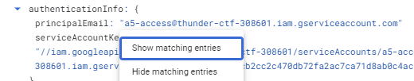
This operation is equivalent to manually adding a filter in the Query builder on the field and running the query as shown below.
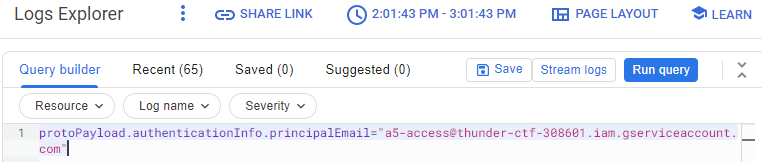
- Take a screenshot showing all of the entries for activities associated with this service account.
Find the Cloud Function update event
We have now added a filter that gives us all of the operations the service account has performed. Use the methods in the previous level to filter by severity. We want to examine all of the operations this service account has performed that might have security relevance. One of the most significant events in this level is the deployment of a new version of the Cloud Function that exposes an access token for the service account bound to the function. The filters you have applied should have given you the event that modifies the Cloud Function with new code. Since this is a significant change, it is logged with a higher priority level. Expand out the entry and examine its fields.
- What is the service account key name used to perform the operation?
The key would need to be deleted if this were an actual compromise. Examine the requestMetadata detailing the caller's information that performed the operation.
- What IP address did the request originate from? What UserAgent was used?
- What methodName was invoked and what authorization permission was used for this operation?
Find the IAM role update event
The Cloud Function is replaced by code that exposes an access token for the service account bound to the function. Another critical event that happens in this level is when one uses this access token to modify the IAM role attached to the original a5-access service account. Remove the service account filter applied in the previous step. Then, use the filters within the interface to select all entries related to the "IAM Role" resource. Find the event associated with the update event. Expand out the entry and examine its fields.
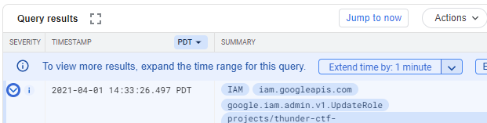
- Take a screenshot of the entry that includes the service account used to perform the operation and its requestMetadata.
- What evidence suggests that this request did not come from the Cloud Function itself?
- Take a screenshot showing the resourceName that has been modified as well as permissions added and removed during this operation
.
Compromise level
Open up your Thunder CTF Google Cloud project and launch the level. Then, make a note of the start time and complete the level.
- Take a screenshot of the secret obtained
Then, make a note of the time you completed it, and leave the level up running.
Level 6 leverages a web application vulnerability to access an authorization token for the virtual machine running the application.
Examine activity
As before, you can use the project's Activity summary to view the various data accesses that have occurred on your project and get their timestamps.
Find exfiltration event
Go to "Logs Explorer" and use the filters within the interface and the timestamps from the previous step to find the event that exfiltrates the secret from the storage bucket. Expand out the entry and examine its fields.
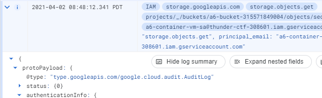
- Take a screenshot of the entry that includes the service account used to access the bucket along with the requestMetadata.
The requestMetadata identifies the IP address that originated the operation.
- Explain why this would be a red flag for a forensic investigator.
Examine instance
When examining the exfiltration event, credentials from a service account associated with a virtual machine were used from a different location. This indicates that the credentials for the machine were compromised. One way this can happen is if an application running on the machine were compromised and the adversary then used access to the machine to hijack its credentials. Application log files are an essential source of information in these situations.
To find the request that exposed the credentials, we will examine the application logs on the VM. Begin by visiting Compute Engine in the web console, finding the virtual machine that hosts the vulnerable web application, and clicking on ssh to bring up a session on it.
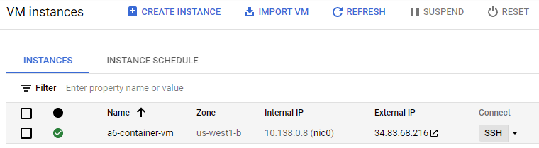
The VM is running the web application as a container. Use the docker CLI to list the containers running:
docker psThe output of the command wraps around two lines. The last column contains the name of the container instance.
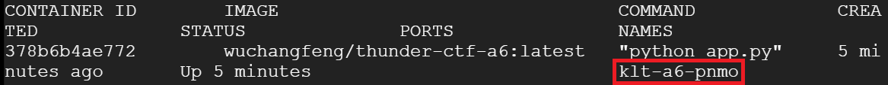
Given the name of the container instance, use the docker CLI to invoke an interactive shell session on the container so you can examine it.
docker exec -it <CONTAINER_NAME> /bin/bashWithin the container, is the Python application app.py. Examine its source code to find the log file that it saves its accesses to. Visit the log file and dump out its contents.
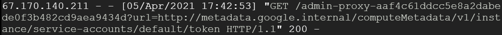
- Take a screenshot of the entry that shows the SSRF vulnerability has been leveraged to get access to the credentials.
You've completed the Thunder CTF lab.
What we've covered
- Identifying and exploiting vulnerable cloud deployments
- Tracking project activity and log data to observe suspicious activity
- Bucket retrieval
- Service account activation
- Listing compute instances
- SSH logins
- Retrieving, executing, and updating functions
- Downloading function source code
- Cloud function runtime errors
- Metadata modification
- User role retrieval and modification